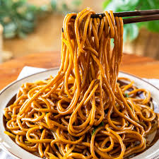

Shahi Paneer is a rich and creamy Indian dish featuring cubes of paneer (Indian
cottage cheese) cooked
in a luscious tomato and cashew-based gravy.
Butter Naan80/-
Butter Naan is a soft and fluffy Indian flatbread, traditionally baked in a tandoor (clay oven).
Brushed with melted butter, it has a rich, savory flavor and a slightly chewy texture.
Rice100/-
Rice is a versatile and staple grain enjoyed worldwide, especially in Indian cuisine.
Whether served as plain steamed rice or flavored with spices and herbs, it acts as a perfect base for
various dishes.
South Indian
Masala dosa120/-
Masala Dosa is a popular South Indian dish consisting of a crispy, golden-brown crepe made from fermented
rice and lentil batter.
Idli50/-
Idli is a soft and fluffy steamed rice cake that is a staple in South Indian cuisine.
Made from a fermented batter of rice and urad dal (black gram), these nutritious cakes are light and
easily digestible.
Sambar100/-
Sambar is a hearty and flavorful South Indian lentil soup made with toor dal (split pigeon peas) and a
variety of vegetables,
such as carrots, drumsticks, and eggplant.
Chinese
Chilly Potato200/-
Chilly Potato is a popular Indo-Chinese dish featuring crispy fried potatoes tossed in a spicy and tangy
sauce.
Fried Rice130/-
Fried Rice is a beloved dish made from cooked rice stir-fried with a medley of vegetables, proteins, and
aromatic seasonings.

Noodles120/-
Noodles are a versatile and widely enjoyed staple, made from wheat, rice, or other grains.
They come in various shapes and sizes, from thin rice vermicelli to thick egg noodles, and can be served
in soups, stir-fries, or salads.